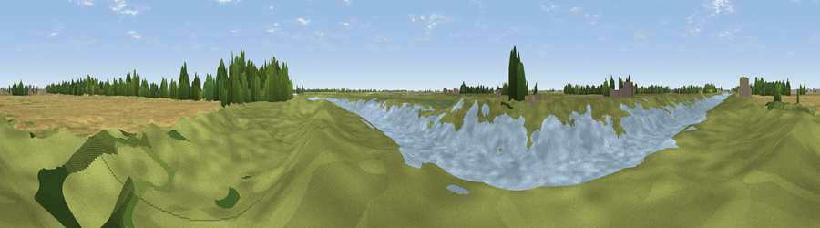

Viewpoint near Fishtoft
#44162 in England · top 67% of its area beats it · near FishtoftWhere it is
The exact computed spot (TF 36092 40122). Click the marker for map links.
The view, rendered

A 360° render of this exact spot computed from the terrain model, tree cover and land cover — summer colours, afternoon light, calibrated against photographs of famous viewpoints. Real trees, hedges and buildings will differ in detail.
The panorama
Grey silhouette: terrain skyline in each direction (720 bearings, Earth curvature and refraction included). Dashed green: skyline with trees (+15 m) and buildings (+8 m) as obstacles. Blue strip: how far the ground is visible on each bearing.
Where the view opens
Wedge length = distance to the farthest visible ground on that bearing (vegetation-aware). Rings at 10, 25 and 50 km.
What fills the view
58% grassland · 20% water · 17% cropland · 3% woodland · 2% wetland
Angular shares of the visible panorama (visual magnitude), not map area. Landscape diversity 0.50 (0–1 Shannon).
Key numbers
More beautiful places nearby
The staircase of upgrades: each row has a higher view potential than everything closer. Driving times are estimates from straight-line distance, calibrated against real road routing — check an actual route before setting out.
| Place | Direction | Drive | Score |
|---|---|---|---|
| Viewpoint near Fishtoft | SSE · 2 km | ~5 min | 24.5 |
| Viewpoint near Fishtoft | ESE · 4 km | ~9 min | 37.5 |
| Grantam Point | N · 24 km | ~39 min | 58.0 |
| Viewpoint near East Keal | N · 24 km | ~39 min | 66.0 |
| Viewpoint near Belvoir | W · 54 km | ~76 min | 70.8 |
| Viewpoint near Claxby | NNW · 61 km | ~83 min | 71.5 |
| Broombriggs Hill | WSW · 88 km | ~113 min | 74.4 |
| Viewpoint near Woodhouse Eaves | WSW · 89 km | ~113 min | 77.7 |
52.94124, 0.02374 · source: osm viewpoint · position refined by local search. Computed location — check access rights before visiting.